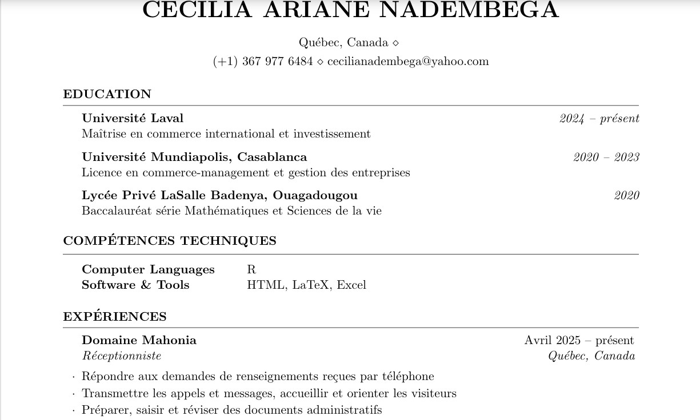
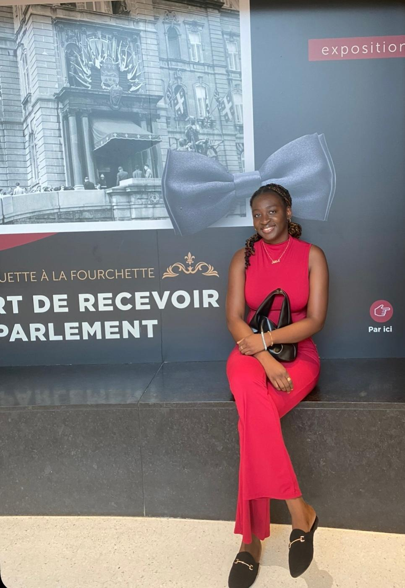

Consultez mon CV
Cliquez sur l'image ci-dessus ou sur le lien ci-dessous pour ouvrir mon CV en PDF dans un nouvel onglet.

Étudiante passionnée par le commerce international et les politiques économiques.
Bienvenue sur mon site !
A propos de moi
Étudiante à la maîtrise professionnelle en études internationales à l’Université Laval, avec une concentration en commerce international et investissement, je m’intéresse particulièrement aux enjeux du développement économique en Afrique. À travers mes travaux universitaires, j’explore des questions liées à l’autonomie économique, à l’industrialisation du continent et aux politiques favorisant une croissance inclusive.
Mon parcours est enrichi par des expériences variées en comptabilité, administration et service à la clientèle, qui m’ont permis de développer rigueur, polyvalence et sens de l’organisation. Je suis également bénévole au sein de l’Association des étudiants des cycles supérieurs de l’Université Laval, ce qui me permet de contribuer à la vie étudiante et de renforcer mes compétences en collaboration et gestion de projets.
Vous trouverez ci-dessous un aperçu de mon CV. Cliquez sur l'image ou le bouton pour consulter le document complet en format PDF.

Cliquez sur l'image ci-dessus ou sur le lien ci-dessous pour ouvrir mon CV en PDF dans un nouvel onglet.
Vous souhaitez me contacter pour des questions, collaborations ou informations sur mes projets académiques ? N’hésitez pas à m’écrire, je vous répondrai dans un délais de deux jours ouvrables, merci!